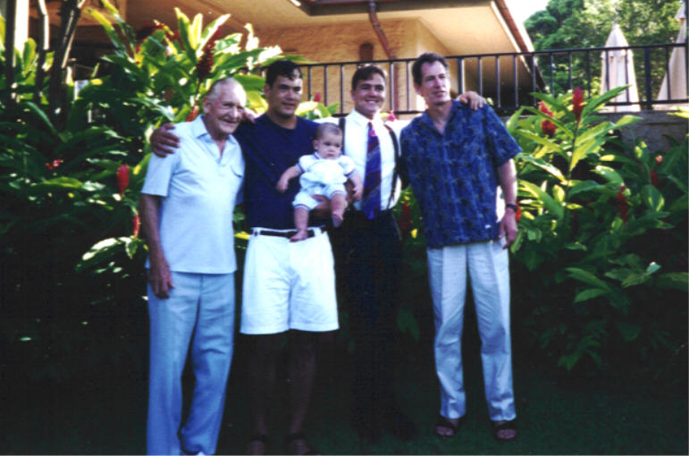
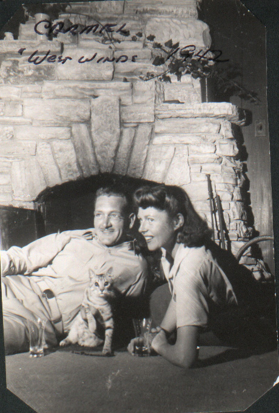

From My Grandfather’s Ledger to the Plaid API
For nearly 30 years, I kept my real estate books the way my grandfather taught me — pen, paper, and a ledger. This Memorial Day, I am finally letting go. Here is the story of what I built instead.
My grandfather, Dr. Raymond M. Curtner, was born in Pittsburgh in 1909 and died in San Francisco in 2004 at the age of 94. In between those two dates, he served as an Army Captain in World War II — leading teams that set up medical facilities in the Pacific theater — earned his dental degree from UC San Francisco, practiced orthodontics for 30 years, was elected a Fellow of the American College of Dentists for his advocacy of water fluoridation, served as president of the UC Alumni Association, chaired the Council on Dental Health for the California Dental Association, sailed out of the St. Francis Yacht Club, skied into his old age, and somewhere in the middle of all of that, taught his grandson how to keep a ledger.
Captain Raymond Curtner, WWII — the man who taught me discipline has a form.
He kept his books by hand. Neat columns, careful ink, a running balance updated with the kind of deliberate attention that made you feel the numbers actually mattered. When I became a real estate investor in 1999, I kept my books the same way. It felt right. It felt like something he taught me — that doing a thing carefully, consistently, by hand, was a form of respect for the thing itself.
I have been doing it that way for nearly 30 years.
I should probably mention that for all of those same 30 years, I have also been working in technology. First at Bank of America, then at Wells Fargo, where I have spent decades as a technology auditor examining some of the most complex financial systems in the world. I know what good technology looks like. I have audited it. I have helped build frameworks to evaluate it.
And yet, every weekend, I would sit down with my paper ledger.

Napili Kai, Maui, 1995. Left to right: Ray Curtner (85), Mat Curtner, baby Jake Curtner, Scott Curtner, Walt Curtner. Four generations — the family has grown considerably since.
That photograph was taken in 1995. Ray was 85 years old, still standing tall, still with that posture of someone completely at ease with himself. I am in the tie. That is my dad Walt on the right, Ray’s son. Mat is holding his baby Jake — Ray’s great-grandchild. Four generations of Curtner men in Maui, and the oldest one was probably the steadiest one in the frame.
He lived nine more years after that photo was taken. I am glad we had them.
The habit I could not break
I tried digital bookkeeping twice in my twenties. It never stuck. Life happened — a move, a marriage, new properties — and I always came back to the ledger. The habit was comfortable. The excuses were easy. “The subscription apps charge too much.” “None of them work exactly the way I want.” “My system is fine.”
My system was not fine. My system was costing me dozens of hours every year that I will never get back.
Near the end of 2025, my annual dread arrived on schedule: April tax season. Twelve-ish hours of pulling together paper records, manila folders, handwritten summaries, and trying to reconstruct a year’s worth of property income and expenses into something my accountant could actually use. I have done this so many times that I have a system for my system — a specific order, specific folders, a specific sequence of banks to call. It works. It is also exhausting and increasingly absurd for someone who spends his professional life evaluating financial technology controls.
While putting together my 2025 taxes, I started a spreadsheet. Just to see. “Maybe I’ll actually use this in 2026,” I told myself — the same thing I had told myself roughly six times before.
This time, something was different. Around the same time, I started using Claude.
The conversation that changed everything
It started with small questions. “What’s the best Excel formula for a running balance?” “How should I structure tabs for multiple properties?” “Knowing what you now know about how my rental income, investment accounts, and W-2 income look — should I stay in Excel or move to Google Sheets?”
Claude answered everything. Patiently. Immediately. Without judgment about the fact that I was a technology auditor who had been keeping books by hand for three decades.
The spreadsheet evolved. Manual entries became a single transaction log. The log grew into per-property views driven by Excel’s modern formula engine. Then I learned I could download CSV exports from Wells Fargo and import them automatically. Then I learned about the Plaid API — a way to connect to my banks programmatically and pull transaction data without ever logging into a portal or clicking a download button.
Each new capability landed like a small revelation. In 2025, I would have expected to pay thousands of dollars for the design and development work I was now doing myself, with Claude, for $20 a month.
I have been excited about technology for my entire career. But the way AI is teaching me to build things — patiently, always available, meeting me exactly where I am — I felt more energized about learning and creating than I ever had. I was burning through my usage limits every weekend and counting the days until I could get back to the project. My AI collaborators — Claude, Gemini, Copilot, and others — were teaching me at a pace no classroom or colleague ever matched.
This was decades of deferred intention accelerating into reality, all at once, in 2026.
What I built
I want to be honest about my situation before describing the system: I manage seven rental properties, 17 Wells Fargo accounts, Chase and Bank of America accounts, and one Visa Signature card. Roughly 400–500 transactions per quarter that need to be categorized, assigned to the right property, and eventually reconciled against a Schedule E. This is not a simple personal finance problem. It is a small business bookkeeping problem, and the system I built reflects that.
DATA SOURCES ENGINE EXCEL OUTPUT Wells Fargo CSV ------> wf_import.py Credit Card CSV ------> (GUI + drag-drop) -----> CSV_Import (staging) | Plaid API ------> plaid_to_import.py -----> review + paste 17 WF accounts | Chase, BofA v AllTransactions_Input | automatic formula cascade | 492SanAngelo 121SantaFe 7587Fremont Personal JointRental | RentTracker Schedule_E BalanceSheet
The categorization engine
At the center is a Python script that auto-categorizes every transaction using a rules engine I wrote myself. A regex pattern, a transaction type, a property assignment, a payment method, and sometimes a split rule for shared expenses. After tuning the rules across several sessions with Claude, the engine now hits 100% auto-categorization on both checking account imports and credit card imports. Zero manual review on recurring transactions.
The Plaid integration
Plaid is the fintech infrastructure layer that connects to banks on your behalf. You authenticate once per institution through a standard browser login, and from that point forward you can pull transaction data programmatically. My entire Wells Fargo relationship — all 17 accounts — connects through a single Plaid token. One authentication, one access token, one connection that persists indefinitely.
The desktop launcher
A small Python desktop application lives as a shortcut on my desktop. One click launches my bookkeeping session: it runs the Plaid sync in the background, shows colorized output, opens Excel automatically when there are new transactions to review, and walks me through a seven-item post-sync checklist. The whole session takes 5–10 minutes. Sometimes less.
What surprised me most
I have spent 25 years inside large financial institutions evaluating technology systems, auditing controls, helping organizations understand what good looks like. I thought I understood what was possible with modern tools.
I did not understand this.
The ability to sit down with an AI, explain a problem in plain language, and have it help me build real working software — Python scripts, a GUI desktop application, banking API integrations, Excel formula architectures — without a development team, without a project budget, without months of planning... this is a genuinely new thing in the world. I am a technology auditor who now considers himself a fintech developer. I built Windows desktop software. I integrated with banking APIs. I did it in weekends, for $20 a month, because I was curious and finally, after years of excuses, done waiting.
The AI tools available today are not just automation. They are amplification. They take whatever you already know and know how to do, and multiply it. For someone who has spent a career learning how complex systems work, that amplification is extraordinary.
I still have much to learn. That is the other thing that surprised me — how much I want to keep learning. Each new capability I discover makes me more excited about the next one.
An auditor’s lens
Any time I build a system that touches financial data, I think about controls. Here is an honest assessment:
- Read-only access: Plaid connections cannot initiate transactions. The system can see your data; it cannot touch your money.
- Secrets management: Access tokens and API keys live in local
.envfiles, gitignored, never in source control or cloud storage. - Traceability: Every transaction carries a Source field (WF_CSV, PLAID, or MANUAL) and a unique Plaid transaction ID where applicable. Every row is traceable.
- Duplicate prevention: The Plaid importer checks every incoming transaction ID against existing records before writing. Re-running the sync never creates duplicate rows.
- Categorization transparency: All rules are explicit, version-logged with dates. No black-box ML — every categorization decision traces to a specific rule I wrote.
- Staging before commit: Transactions pass through a review tab before being promoted to the master ledger. I see them before they count.
- Known limitations: No automated reconciliation against bank statements. Manual entries require discipline. Plaid’s default history window is 90 days.
For Ray, on Memorial Day
Ray Curtner served his country, came home, built a career, raised a family, and along the way taught his grandson that keeping careful records was a form of respect — for the work, for the numbers, for the life you were building.
He also spent his professional life arguing that dentistry should work to make itself unnecessary. He advocated for water fluoridation because he believed in prevention over intervention. He wanted people to need him less, not more. There is a certain kind of integrity in that — using your expertise to make the problem smaller, not to make yourself indispensable.
I think about that when I think about this bookkeeping system. The paper ledger was not the point. The discipline was the point. The attention was the point. The running balance that told you exactly where you stood — that was the point. The paper was just the medium we had.
Ray would have found a way to use the tools available to him now. He was someone who learned and adapted his whole life — from Army field medicine to peacetime orthodontics, from analog practice management to whatever came next. I think he would have been genuinely delighted by what AI can do today. Not because it is impressive technology, but because it helps people do their work better and with more time left over for the things that matter.

Ray and Jean Curtner, Carmel / Fort Ord, 1942. Before the Pacific. Before everything.
The ledger was never about the paper. It was about knowing where you stand.
I know where I stand, Grandpa. Thank you for teaching me to keep track.
If you want to build something similar
You do not need to be a software engineer. I am not one. What you need is a clear sense of what you want to track, patience for a learning curve that is genuinely shorter than it has ever been, and a good AI collaborator who will meet you where you are.
Start with the data model. Before you write a single line of code or connect a single API, think through what columns you need, how your properties or accounts map to categories, and what your output needs to look like at tax time. That thinking is the hard part. The rest follows from it.
If this resonates — if you have your own version of the paper ledger you have been meaning to leave behind — I would be glad to talk through the architecture. Reach out on LinkedIn or through the contact page here.
The tools are there. The help is available. The moment, as it turns out, has been now for a while. I just needed to finally show up for it.